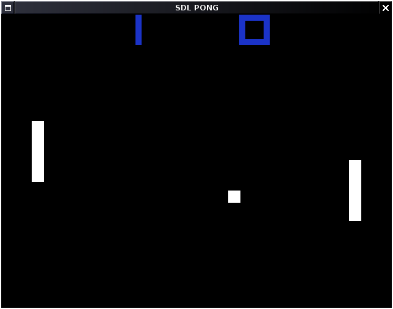

NATHAN242's Projects
Projects
Tools
Libraries
Web Tools
Project repo: LINK
Compiled to WebAssembly: PLAY IN BROWSER
This is a simple Pong clone I created while learning about C/C++ and SDL. It has a basic physics system and simple AI for the opponent.
Use the arrow keys to move your paddle or press Q to quit. The first player to score 10 wins. The AI is currently very simple and just moves depending on the current position of the ball on the y-axis. Hitting the ball at the bottom or top edge of the paddle causes it to move at a sharper angle.
Getting the physics of the ball to work correctly was one of the biggest challenges. I ended up creating a simple physics C++ class to handle this. It is basic but can support an unlimited number of physics "objects".
It works by moving through a linked list of C structs that represent physics objects and checking if anything is colliding. If a collision is found it will adjust the movement variables for the colliding objects. You can also assign a callback function to be called when an object collides (this is used on the ball to detect a successful score).
To use the class, create your physics objects then add them to a class instance. This is how it is currently used:
phys_obj *paddle_left = new phys_obj;
phys_obj *paddle_right = new phys_obj;
phys_obj *ball = new phys_obj;
// Left paddle
paddle_left->sprite = SDL_DisplayFormat(IMG_Load("paddle.png"));
paddle_left->pos_x = 50;
paddle_left->pos_y = 100;
paddle_left->size_x = 20;
paddle_left->size_y = 100;
paddle_left->step_x = 0;
paddle_left->step_y = 0;
paddle_left->delay = 0;
paddle_left->delay_counter = 0;
paddle_left->bounce = 0;
paddle_left->collided = NULL;
paddle_left->callback = NULL;
// Right paddle
paddle_right->sprite = SDL_DisplayFormat(IMG_Load("paddle.png"));
paddle_right->pos_x = 570;
paddle_right->pos_y = 350;
paddle_right->size_x = 20;
paddle_right->size_y = 100;
paddle_right->step_x = 0;
paddle_right->step_y = 0;
paddle_right->delay = 0;
paddle_right->delay_counter = 0;
paddle_right->bounce = 0;
paddle_right->collided = NULL;
paddle_right->callback = NULL;
// Ball
ball->sprite = SDL_DisplayFormat(IMG_Load("ball.png"));
ball->pos_x = 300;
ball->pos_y = 100;
ball->size_x = 20;
ball->size_y = 20;
ball->step_x = 1;
ball->step_y = 1;
ball->delay = 0;
ball->delay_counter = 0;
ball->bounce = 1;
ball->collided = NULL;
ball->callback = collision_callback;
// Physics
phys *physics = new phys(resX, resY);
physics->add_object(paddle_left);
physics->add_object(paddle_right);
physics->add_object(ball);
In the main program loop you can advance the physics by just doing:
// Advance physics physics->advance();
This will update all the physics objects positions.
I will push updates to try and fix some of those when I get the time. Others may contribute if they wish.